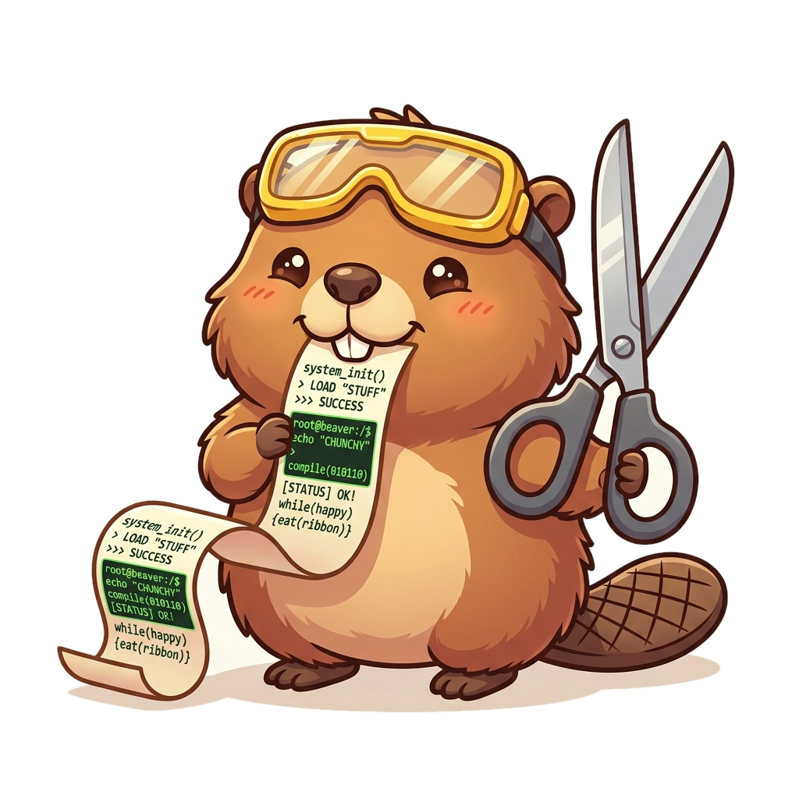
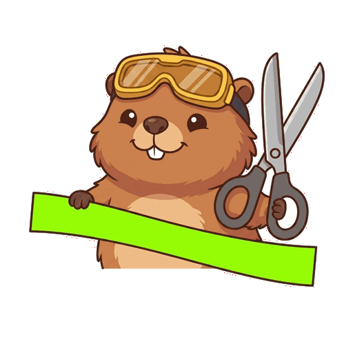

You recorded your terminal with asciinema, and most of it is waiting—a spinner turning, a build compiling. asciicut lets you see that dead air and slice it out, turning a slow 15-minute recording into a tight 40-second demo clip.
npx asciicut demo.cast

Play a real asciinema recording, or test our interactive timeline simulator below to see how easy cutting terminal dead air becomes.
Asciicut solves the terminal editing workflow problem with speed, visual clarity, and automation.
The activity timeline parses terminal change density and renders a waveform. Waiting, compile jobs, or AI thinking stages immediately stand out as flat valleys.
A filmstrip of actual terminal screenshots runs along the timeline. Drag handles directly on the timeline based on what's visible, eliminating numeric timestamp guessing.
Assign custom speeds to individual sections (e.g. 5x through a build process) and hold the end frame (freeze) so viewers can actually read the final result before the loop ends.
Export as trimmed asciicast `.cast` files, or render directly into share-ready MP4, WebM, or GIF videos. Video compilers are bundled inside—no ffmpeg setup required.
The same engine exposes the activity signal and any terminal frame as text/JSON, so coding agents can find dead air and compose cuts headlessly today. A dedicated Model Context Protocol (MCP) server is on the roadmap.
Built on a single Rust engine. It runs locally as a supercharged CLI/Tauri app, or compiles to WebAssembly for browser-side execution with zero backend dependency.
Get up and running with a single command or installer.
Launch the interactive visual editor directly in your default browser using Node/npm:
npx asciicut my_recording.castDownload the binary for your platform — no Rust toolchain required:
curl --proto '=https' --tlsv1.2 -LsSf https://github.com/Entelligentsia/asciicut/releases/latest/download/asciicut-installer.sh | shKeep the CLI up-to-date with our public Homebrew repository tap:
brew tap entelligentsia/tap
brew install asciicutPrefer the desktop app? Install the GUI as a Cask from the same tap:
brew install --cask entelligentsia/tap/asciicutGet the standalone Tauri-powered desktop application, self-bundled with video compression engines.
Asciicut is one binary that plays both roles. A project file created in the GUI works identically on the command line.
Script your editing workflow, automate clip rendering in CI pipelines, or power AI agent edits:
asciicut my_demo.castasciicut compose project.asciicut.json > cut.castasciicut cut.castEnjoy frame-perfect timeline drag handles, real-time preview playback, and custom theme presets:

Equipped with safety goggles and oversized steel shears, Nibbles is always on duty to cut out the dead air. He runs the status indicators, helps you troubleshoot missing inputs when tangled in tape, and powers the progress loading overlays on a hamster wheel.